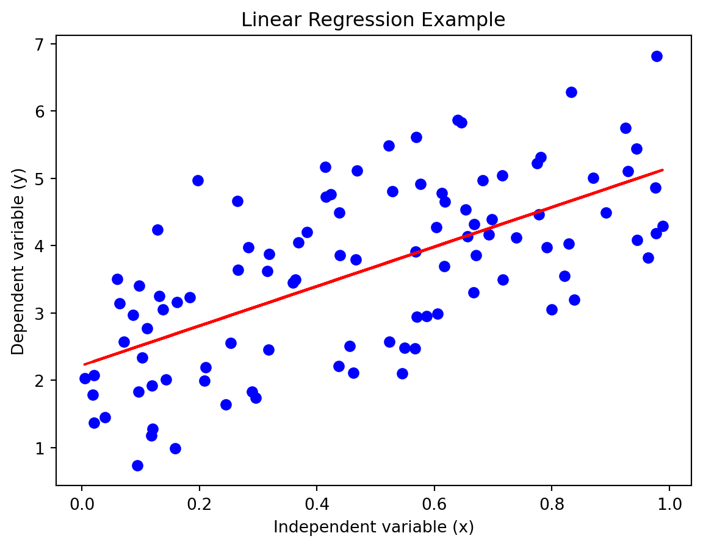
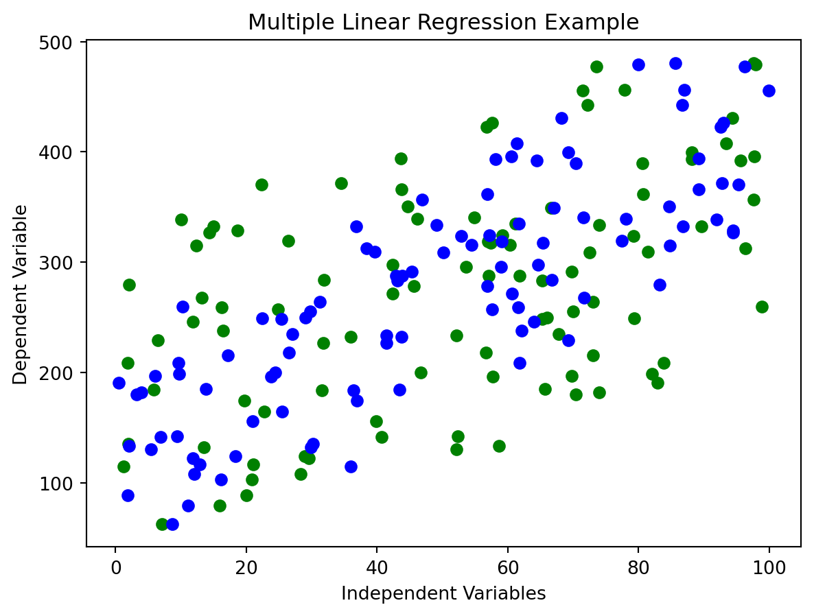

Linear regression is a widely used statistical method that models the relationship between a dependent variable and one or more independent variables. It’s based on the assumption that there is a linear relationship between these variables. The goal of linear regression is to find the best-fitting straight line through the data points. This line is represented by an equation that predicts the dependent variable based on the values of the independent variables. This technique is particularly useful because of its simplicity and efficiency in forecasting outcomes.
Advantages of Linear Regression
Simplicity: Linear regression is straightforward to implement, making it a great starting point for predictive modeling. Even with minimal statistical knowledge, one can interpret and understand the results of a linear regression model. This simplicity also leads to ease in training and predicting with these models, which is beneficial in many practical applications.
Interpretability: The results of linear regression models are highly interpretable, as they provide clear and actionable insights. Each coefficient in the linear equation represents the impact of one independent variable on the dependent variable, allowing for straightforward interpretation of how each factor influences the outcome.
Basis for Other Methods: Linear regression forms the foundation for many other statistical and machine learning techniques. Understanding linear regression is crucial before moving on to more complex models. It provides the fundamental concepts used in other advanced techniques, such as logistic regression and neural networks.
Uses of Linear Regression
Predictive Analysis: Linear regression is extensively used in various fields for predictive analysis. In finance, it helps in predicting stock prices, in healthcare, it’s used to anticipate disease progression, and in real estate, it can predict property prices. Its ability to model and forecast continuous variables makes it invaluable in these fields.
Risk Assessment: The model is pivotal in insurance and finance for risk assessment. It helps in understanding and quantifying the risks associated with various factors. For instance, it can be used to determine the risk factors in car insurance premiums or to evaluate credit risk in banking.
Trend Analysis: In economics and business, linear regression is used for trend analysis. It helps in identifying and quantifying trends in sales, market growth, or economic changes. This information is crucial for strategic planning and decision-making in business environments.
Example 1: Simple Linear Regression
The following example in Python showcases how to implement a linear regression model. We’ll generate some synthetic data, fit a linear regression model, and then visualize the results with a plot.
Code
# Import necessary librariesimport numpy as npimport matplotlib.pyplot as pltfrom sklearn.linear_model import LinearRegression# Generate some random datanp.random.seed(0)x = np.random.rand(100, 1)y =2+3* x + np.random.randn(100, 1)# Fit the linear regression modelmodel = LinearRegression()model.fit(x, y)y_pred = model.predict(x)# Plottingplt.scatter(x, y, color='blue')plt.plot(x, y_pred, color='red')plt.title('Linear Regression Example')plt.xlabel('Independent variable (x)')plt.ylabel('Dependent variable (y)')plt.show()

In this code, we start by generating random data to simulate a real-world dataset. The LinearRegression class from Scikit-learn is used to fit the model, which involves finding the coefficients that minimize the difference between the predicted and actual values. Finally, the results are visualized in a plot, showing the data points and the fitted regression line, providing a clear illustration of the model’s performance.
Example 2: Multiple Linear Regression
Our second example extends to multiple linear regression, where we use more than one independent variable for prediction.
Python Code for Multiple Linear Regression
Code
# Import necessary librariesimport numpy as npimport matplotlib.pyplot as pltfrom sklearn.linear_model import LinearRegression# Generating random data n =100np.random.seed(0) x = np.random.rand(n,2) *100# Two independent variables y =4+2* x[:,0] +3* x[:,1] + np.random.rand(n) *40# Fitting the model model = LinearRegression() model.fit(x, y) y_pred = model.predict(x) # Plotting plt.scatter(x[:,0], y, color='green', label='Independent Variable 1') plt.scatter(x[:,1], y, color='blue', label='Independent Variable 2') plt.title('Multiple Linear Regression Example') plt.xlabel('Independent Variables') plt.ylabel('Dependent Variable') plt.show()

In this second example, we introduce an additional independent variable, making it a multiple linear regression model. This type of model can capture more complex relationships between variables. The plot here shows the relationship between each independent variable and the dependent variable. Notice the addition of a legend to differentiate between the two independent variables.
Differences Between the Two Examples
Number of Independent Variables: The first example uses a single independent variable, while the second uses two. This demonstrates the transition from simple to multiple linear regression.
Complexity: Multiple linear regression (Example 2) can model more complex relationships compared to simple linear regression (Example 1). It’s more versatile in handling real-world scenarios where multiple factors influence the outcome.
Visualization: In the first example, we can visualize the relationship directly as a line. In the second, due to the addition of another dimension, the visualization becomes more complex, showing individual relationships with each independent variable.